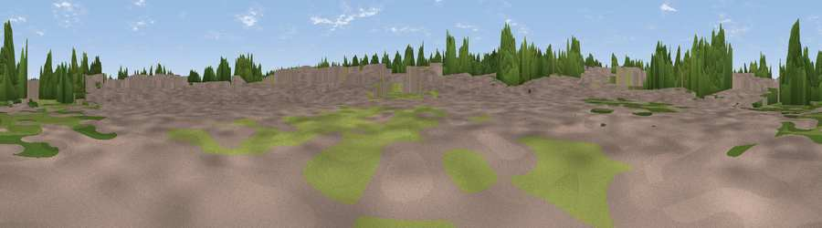

Site of Kinson Village Pound
#45905 in England · top 98% of its area beats it · near KinsonThe view, rendered

A 360° render of this exact spot computed from the terrain model, tree cover and land cover — summer colours, afternoon light, calibrated against photographs of famous viewpoints. Real trees, hedges and buildings will differ in detail.
The panorama
Grey silhouette: terrain skyline in each direction (720 bearings, Earth curvature and refraction included). Dashed green: skyline with trees (+15 m) and buildings (+8 m) as obstacles. Blue strip: how far the ground is visible on each bearing.
Where the view opens
Wedge length = distance to the farthest visible ground on that bearing (vegetation-aware). Rings at 10, 25 and 50 km.
What fills the view
43% built-up · 37% woodland · 19% grassland ·
Angular shares of the visible panorama (visual magnitude), not map area. Landscape diversity 0.47 (0–1 Shannon).
Key numbers
More beautiful places nearby
The staircase of upgrades: each row has a higher view potential than everything closer. Driving times are estimates from straight-line distance, calibrated against real road routing — check an actual route before setting out.
| Place | Direction | Drive | Score |
|---|---|---|---|
| Viewpoint near Dudsbury | NNE · 1 km | ~4 min | 19.1 |
| Viewpoint near Merley | W · 4 km | ~9 min | 53.8 |
| Viewpoint near Merley | W · 4 km | ~10 min | 59.5 |
| Viewpoint near Corfe Mullen | W · 9 km | ~18 min | 60.9 |
| Viewpoint near Studland | S · 15 km | ~27 min | 62.6 |
| Viewpoint near Studland | S · 16 km | ~28 min | 80.9 |
| Viewpoint near Studland | SSW · 16 km | ~28 min | 82.2 |
| Ballard Down | SSW · 16 km | ~28 min | 83.2 |
50.76949, -1.90121 · source: osm viewpoint · position refined by local search. Computed location — check access rights before visiting.